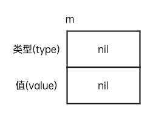

接口（interface）定义了一个对象的行为规范，只定义规范不实现，由具体的对象来实现规范的细节。
本章学习目标
- 了解为什么需要接口以及接口的特点
- 掌握接口的声明和使用
- 掌握接口值的概念
- 掌握空接口的特点及其使用场景
在Go语言中接口（interface）是一种类型，一种抽象的类型。相较于之前章节中讲到的那些具体类型（字符串、切片、结构体等）更注重“我是谁”，接口类型更注重“我能做什么”的问题。接口类型就像是一种约定——概括了一种类型应该具备哪些方法，在Go语言中提倡使用面向接口的编程方式实现解耦。
1.接口类型
接口是一种由程序员来定义的类型，一个接口类型就是一组方法的集合，它规定了需要实现的所有方法。
相较于使用结构体类型，当我们使用接口类型说明相比于它是什么更关心它能做什么。
1.1 接口的定义
每个接口类型由任意个方法签名组成，接口的定义格式如下：
type 接口类型名 interface{
方法名1( 参数列表1 ) 返回值列表1
方法名2( 参数列表2 ) 返回值列表2
…
}
其中：
- 接口类型名：Go语言的接口在命名时，一般会在单词后面添加
er，如有写操作的接口叫Writer，有关闭操作的接口叫closer等。接口名最好要能突出该接口的类型含义。 - 方法名：当方法名首字母是大写且这个接口类型名首字母也是大写时，这个方法可以被接口所在的包（package）之外的代码访问。
- 参数列表、返回值列表：参数列表和返回值列表中的参数变量名可以省略。
举个例子，定义一个包含Write方法的Writer接口。
type Writer interface{
Write([]byte) error
}
当你看到一个Writer接口类型的值时，你不知道它是什么，唯一知道的就是可以通过调用它的Write方法来做一些事情。
1.2 实现接口的条件
接口就是规定了一个需要实现的方法列表，在 Go 语言中一个类型只要实现了接口中规定的所有方法，那么我们就称它实现了这个接口。
我们定义的Singer接口类型，它包含一个Sing方法。
// Singer 接口
type Singer interface {
Sing()
}
我们有一个Bird结构体类型如下。
type Bird struct {}
因为Singer接口只包含一个Sing方法，所以只需要给Bird结构体添加一个Sing方法就可以满足Singer接口的要求。
// Sing Bird类型的Sing方法
func (b Bird) Sing() {
fmt.Println("汪汪汪")
}
这样就称为Bird实现了Singer接口。
1.3 为什么要使用接口？
现在假设我们的代码世界里有很多小动物，下面的代码片段定义了猫和狗，它们饿了都会叫。
package main
import "fmt"
type Cat struct{}
func (c Cat) Say() {
fmt.Println("喵喵喵~")
}
type Dog struct{}
func (d Dog) Say() {
fmt.Println("汪汪汪~")
}
func main() {
c := Cat{}
c.Say()
d := Dog{}
d.Say()
}
这个时候又跑来了一只羊，羊饿了也会发出叫声。
type Sheep struct{}
func (s Sheep) Say() {
fmt.Println("咩咩咩~")
}
我们接下来定义一个饿肚子的场景。
// MakeCatHungry 猫饿了会喵喵喵~
func MakeCatHungry(c Cat) {
c.Say()
}
// MakeSheepHungry 羊饿了会咩咩咩~
func MakeSheepHungry(s Sheep) {
s.Say()
}
接下来会有越来越多的小动物跑过来，我们的代码世界该怎么拓展呢？
在饿肚子这个场景下，我们可不可以把所有动物都当成一个“会叫的类型”来处理呢？当然可以！使用接口类型就可以实现这个目标。 我们的代码其实并不关心究竟是什么动物在叫，我们只是在代码中调用它的Say()方法，这就足够了。
我们可以约定一个Sayer类型，它必须实现一个Say()方法，只要饿肚子了，我们就调用Say()方法。
type Sayer interface {
Say()
}
然后我们定义一个通用的MakeHungry函数，接收Sayer类型的参数。
// MakeHungry 饿肚子了...
func MakeHungry(s Sayer) {
s.Say()
}
我们通过使用接口类型，把所有会叫的动物当成Sayer类型来处理，只要实现了Say()方法都能当成Sayer类型的变量来处理。
var c cat
MakeHungry(c)
var d dog
MakeHungry(d)
在电商系统中我们允许用户使用多种支付方式（支付宝支付、微信支付、银联支付等），我们的交易流程中可能不太在乎用户究竟使用什么支付方式，只要它能提供一个实现支付功能的Pay方法让调用方调用就可以了。
再比如我们需要在某个程序中添加一个将某些指标数据向外输出的功能，根据不同的需求可能要将数据输出到终端、写入到文件或者通过网络连接发送出去。在这个场景下我们可以不关注最终输出的目的地是什么，只需要它能提供一个Write方法让我们把内容写入就可以了。
Go语言中为了解决类似上面的问题引入了接口的概念，接口类型区别于我们之前章节中介绍的那些具体类型，让我们专注于该类型提供的方法，而不是类型本身。使用接口类型通常能够让我们写出更加通用和灵活的代码。
1.4 面向接口编程
PHP、Java等语言中也有接口的概念，不过在PHP和Java语言中需要显式声明一个类实现了哪些接口，在Go语言中使用隐式声明的方式实现接口。只要一个类型实现了接口中规定的所有方法，那么它就实现了这个接口。
Go语言中的这种设计符合程序开发中抽象的一般规律，例如在下面的代码示例中，我们的电商系统最开始只设计了支付宝一种支付方式：
type ZhiFuBao struct {
// 支付宝
}
// Pay 支付宝的支付方法
func (z *ZhiFuBao) Pay(amount int64) {
fmt.Printf("使用支付宝付款：%.2f元。\n", float64(amount/100))
}
// Checkout 结账
func Checkout(obj *ZhiFuBao) {
// 支付100元
obj.Pay(100)
}
func main() {
Checkout(&ZhiFuBao{})
}
随着业务的发展，根据用户需求添加支持微信支付。
type WeChat struct {
// 微信
}
// Pay 微信的支付方法
func (w *WeChat) Pay(amount int64) {
fmt.Printf("使用微信付款：%.2f元。\n", float64(amount/100))
}
在实际的交易流程中，我们可以根据用户选择的支付方式来决定最终调用支付宝的Pay方法还是微信支付的Pay方法。
// Checkout 支付宝结账
func CheckoutWithZFB(obj *ZhiFuBao) {
// 支付100元
obj.Pay(100)
}
// Checkout 微信支付结账
func CheckoutWithWX(obj *WeChat) {
// 支付100元
obj.Pay(100)
}
实际上，从上面的代码示例中我们可以看出，我们其实并不怎么关心用户选择的是什么支付方式，我们只关心调用Pay方法时能否正常运行。这就是典型的“不关心它是什么，只关心它能做什么”的场景。
在这种场景下我们可以将具体的支付方式抽象为一个名为Payer的接口类型，即任何实现了Pay方法的都可以称为Payer类型。
// Payer 包含支付方法的接口类型
type Payer interface {
Pay(int64)
}
此时只需要修改下原始的Checkout函数，它接收一个Payer类型的参数。这样就能够在不修改既有函数调用的基础上，支持新的支付方式。
// Checkout 结账
func Checkout(obj Payer) {
// 支付100元
obj.Pay(100)
}
func main() {
Checkout(&ZhiFuBao{}) // 之前调用支付宝支付
Checkout(&WeChat{}) // 现在支持使用微信支付
}
像类似的例子在我们编程过程中会经常遇到：
- 比如一个网上商城可能使用支付宝、微信、银联等方式去在线支付，我们能不能把它们当成“支付方式”来处理呢？
- 比如三角形，四边形，圆形都能计算周长和面积，我们能不能把它们当成“图形”来处理呢？
- 比如满减券、立减券、打折券都属于电商场景下常见的优惠方式，我们能不能把它们当成“优惠券”来处理呢？
接口类型是Go语言提供的一种工具，在实际的编码过程中是否使用它由你自己决定，但是通常使用接口类型可以使代码更清晰易读。
1.5 接口类型变量
那实现了接口又有什么用呢？一个接口类型的变量能够存储所有实现了该接口的类型变量。
例如在上面的示例中，Dog和Cat类型均实现了Sayer接口，此时一个Sayer类型的变量就能够接收Cat和Dog类型的变量。
var x Sayer // 声明一个Sayer类型的变量x
a := Cat{} // 声明一个Cat类型变量a
b := Dog{} // 声明一个Dog类型变量b
x = a // 可以把Cat类型变量直接赋值给x
x.Say() // 喵喵喵
x = b // 可以把Dog类型变量直接赋值给x
x.Say() // 汪汪汪
2.值接收者和指针接收者
在结构体那一章节中，我们介绍了在定义结构体方法时既可以使用值接收者也可以使用指针接收者。那么对于实现接口来说使用值接收者和使用指针接收者有什么区别呢？接下来我们通过一个例子看一下其中的区别。
我们定义一个Mover接口，它包含一个Move方法。
// Mover 定义一个接口类型
type Mover interface {
Move()
}
2.1 值接收者实现接口
我们定义一个Dog结构体类型，并使用值接收者为其定义一个Move方法。
// Dog 狗结构体类型
type Dog struct{}
// Move 使用值接收者定义Move方法实现Mover接口
func (d Dog) Move() {
fmt.Println("狗会动")
}
此时实现Mover接口的是Dog类型。
var x Mover // 声明一个Mover类型的变量x
var d1 = Dog{} // d1是Dog类型
x = d1 // 可以将d1赋值给变量x
x.Move()
var d2 = &Dog{} // d2是Dog指针类型
x = d2 // 也可以将d2赋值给变量x
x.Move()
从上面的代码中我们可以发现，使用值接收者实现接口之后，不管是结构体类型还是对应的结构体指针类型的变量都可以赋值给该接口变量。
2.2 指针接收者实现接口
我们再来测试一下使用指针接收者实现接口有什么区别。
// Cat 猫结构体类型
type Cat struct{}
// Move 使用指针接收者定义Move方法实现Mover接口
func (c *Cat) Move() {
fmt.Println("猫会动")
}
此时实现Mover接口的是*Cat类型，我们可以将*Cat类型的变量直接赋值给Mover接口类型的变量x。
var c1 = &Cat{} // c1是*Cat类型
x = c1 // 可以将c1当成Mover类型
x.Move()
但是不能给将Cat类型的变量赋值给Mover接口类型的变量x。
// 下面的代码无法通过编译
var c2 = Cat{} // c2是Cat类型
x = c2 // 不能将c2当成Mover类型
由于Go语言中有对指针求值的语法糖，对于值接收者实现的接口，无论使用值类型还是指针类型都没有问题。但是我们并不总是能对一个值求址，所以对于指针接收者实现的接口要额外注意。
3.类型与接口的关系
3.1 一个类型实现多个接口
一个类型可以同时实现多个接口，而接口间彼此独立，不知道对方的实现。例如狗不仅可以叫，还可以动。我们完全可以分别定义Sayer接口和Mover接口，具体代码示例如下。
// Sayer 接口
type Sayer interface {
Say()
}
// Mover 接口
type Mover interface {
Move()
}
Dog既可以实现Sayer接口，也可以实现Mover接口。
type Dog struct {
Name string
}
// 实现Sayer接口
func (d Dog) Say() {
fmt.Printf("%s会叫汪汪汪\n", d.Name)
}
// 实现Mover接口
func (d Dog) Move() {
fmt.Printf("%s会动\n", d.Name)
}
同一个类型实现不同的接口互相不影响使用。
var d = Dog{Name: "旺财"}
var s Sayer = d
var m Mover = d
s.Say() // 对Sayer类型调用Say方法
m.Move() // 对Mover类型调用Move方法
3.2 多种类型实现同一接口
Go语言中不同的类型还可以实现同一接口。例如在我们的代码世界中不仅狗可以动，汽车也可以动。我们可以使用如下代码体现这个关系。
// 实现Mover接口
func (d Dog) Move() {
fmt.Printf("%s会动\n", d.Name)
}
// Car 汽车结构体类型
type Car struct {
Brand string
}
// Move Car类型实现Mover接口
func (c Car) Move() {
fmt.Printf("%s速度70迈\n", c.Brand)
}
这样我们在代码中就可以把狗和汽车当成一个会动的类型来处理，不必关注它们具体是什么，只需要调用它们的Move方法就可以了。
var obj Mover
obj = Dog{Name: "旺财"}
obj.Move()
obj = Car{Brand: "宝马"}
obj.Move()
上面的代码执行结果如下：
旺财会跑
宝马速度70迈
一个接口的所有方法，不一定需要由一个类型完全实现，接口的方法可以通过在类型中嵌入其他类型或者结构体来实现。
// WashingMachine 洗衣机
type WashingMachine interface {
wash()
dry()
}
// 甩干器
type dryer struct{}
// 实现WashingMachine接口的dry()方法
func (d dryer) dry() {
fmt.Println("甩一甩")
}
// 海尔洗衣机
type haier struct {
dryer //嵌入甩干器
}
// 实现WashingMachine接口的wash()方法
func (h haier) wash() {
fmt.Println("洗刷刷")
}
4.接口组合
接口与接口之间可以通过互相嵌套形成新的接口类型，例如Go标准库io源码中就有很多接口之间互相组合的示例。
// src/io/io.go
type Reader interface {
Read(p []byte) (n int, err error)
}
type Writer interface {
Write(p []byte) (n int, err error)
}
type Closer interface {
Close() error
}
// ReadWriter 是组合Reader接口和Writer接口形成的新接口类型
type ReadWriter interface {
Reader
Writer
}
// ReadCloser 是组合Reader接口和Closer接口形成的新接口类型
type ReadCloser interface {
Reader
Closer
}
// WriteCloser 是组合Writer接口和Closer接口形成的新接口类型
type WriteCloser interface {
Writer
Closer
}
对于这种由多个接口类型组合形成的新接口类型，同样只需要实现新接口类型中规定的所有方法就算实现了该接口类型。
接口也可以作为结构体的一个字段，我们来看一段Go标准库sort源码中的示例。
// src/sort/sort.go
// Interface 定义通过索引对元素排序的接口类型
type Interface interface {
Len() int
Less(i, j int) bool
Swap(i, j int)
}
// reverse 结构体中嵌入了Interface接口
type reverse struct {
Interface
}
通过在结构体中嵌入一个接口类型，从而让该结构体类型实现了该接口类型，并且还可以改写该接口的方法。
// Less 为reverse类型添加Less方法，重写原Interface接口类型的Less方法
func (r reverse) Less(i, j int) bool {
return r.Interface.Less(j, i)
}
Interface类型原本的Less方法签名为Less(i, j int) bool，此处重写为r.Interface.Less(j, i)，即通过将索引参数交换位置实现反转。
在这个示例中还有一个需要注意的地方是reverse结构体本身是不可导出的（结构体类型名称首字母小写），sort.go中通过定义一个可导出的Reverse函数来让使用者创建reverse结构体实例。
func Reverse(data Interface) Interface {
return &reverse{data}
}
这样做的目的是保证得到的reverse结构体中的Interface属性一定不为nil，否者r.Interface.Less(j, i)就会出现空指针panic。
此外在Go内置标准库database/sql中也有很多类似的结构体内嵌接口类型的使用示例，各位读者可自行查阅。
5.空接口
5.1 空接口的定义
空接口是指没有定义任何方法的接口类型。因此任何类型都可以视为实现了空接口。也正是因为空接口类型的这个特性，空接口类型的变量可以存储任意类型的值。
package main
import "fmt"
// 空接口
// Any 不包含任何方法的空接口类型
type Any interface{}
// Dog 狗结构体
type Dog struct{}
func main() {
var x Any
x = "你好" // 字符串型
fmt.Printf("type:%T value:%v\n", x, x)
x = 100 // int型
fmt.Printf("type:%T value:%v\n", x, x)
x = true // 布尔型
fmt.Printf("type:%T value:%v\n", x, x)
x = Dog{} // 结构体类型
fmt.Printf("type:%T value:%v\n", x, x)
}
通常我们在使用空接口类型时不必使用type关键字声明，可以像下面的代码一样直接使用interface{}。
var x interface{} // 声明一个空接口类型变量x
5.2 空接口的应用
5.2.1 空接口作为函数的参数
使用空接口实现可以接收任意类型的函数参数。
// 空接口作为函数参数
func show(a interface{}) {
fmt.Printf("type:%T value:%v\n", a, a)
}
5.2.2 空接口作为map的值
使用空接口实现可以保存任意值的字典。
// 空接口作为map值
var studentInfo = make(map[string]interface{})
studentInfo["name"] = "沙河娜扎"
studentInfo["age"] = 18
studentInfo["married"] = false
fmt.Println(studentInfo)
6.接口值
由于接口类型的值可以是任意一个实现了该接口的类型值，所以接口值除了需要记录具体值之外，还需要记录这个值属于的类型。也就是说接口值由“类型”和“值”组成，鉴于这两部分会根据存入值的不同而发生变化，我们称之为接口的动态类型和动态值。

我们接下来通过一个示例来加深对接口值的理解。
下面的示例代码中，定义了一个Mover接口类型和两个实现了该接口的Dog和Car结构体类型。
type Mover interface {
Move()
}
type Dog struct {
Name string
}
func (d *Dog) Move() {
fmt.Println("狗在跑~")
}
type Car struct {
Brand string
}
func (c *Car) Move() {
fmt.Println("汽车在跑~")
}
首先，我们创建一个Mover接口类型的变量m。
var m Mover
此时，接口变量m是接口类型的零值，也就是它的类型和值部分都是nil，就如下图所示。

我们可以使用m == nil来判断此时的接口值是否为空。
fmt.Println(m == nil) // true
**注意：**我们不能对一个空接口值调用任何方法，否则会产生panic。
m.Move() // panic: runtime error: invalid memory address or nil pointer dereference
接下来，我们将一个*Dog结构体指针赋值给变量m。
m = &Dog{Name: "旺财"}
此时，接口值m的动态类型会被设置为*Dog，动态值为结构体变量的拷贝。
然后，我们给接口变量m赋值为一个*Car类型的值。
var c *Car
m = c
这一次，接口值m的动态类型为*Car，动态值为nil。
**注意：**此时接口变量m与nil并不相等，因为它只是动态值的部分为nil，而动态类型部分保存着对应值的类型。
fmt.Println(m == nil) // false
接口值是支持相互比较的，当且仅当接口值的动态类型和动态值都相等时才相等。
var (
x Mover = new(Dog)
y Mover = new(Car)
)
fmt.Println(x == y) // false
但是有一种特殊情况需要特别注意，如果接口值保存的动态类型相同，但是这个动态类型不支持互相比较（比如切片），那么对它们相互比较时就会引发panic。
var z interface{} = []int{1, 2, 3}
fmt.Println(z == z) // panic: runtime error: comparing uncomparable type []int
7.类型断言
接口值可能赋值为任意类型的值，那我们如何从接口值获取其存储的具体数据呢？
我们可以借助标准库fmt包的格式化打印获取到接口值的动态类型。
var m Mover
m = &Dog{Name: "旺财"}
fmt.Printf("%T\n", m) // *main.Dog
m = new(Car)
fmt.Printf("%T\n", m) // *main.Car
而fmt包内部其实是使用反射的机制在程序运行时获取到动态类型的名称。关于反射的内容我们会在后续章节详细介绍。
而想要从接口值中获取到对应的实际值需要使用类型断言，其语法格式如下。
x.(T)
其中：
- x：表示接口类型的变量
- T：表示断言
x可能是的类型。
该语法返回两个参数，第一个参数是x转化为T类型后的变量，第二个值是一个布尔值，若为true则表示断言成功，为false则表示断言失败。
举个例子：
var n Mover = &Dog{Name: "旺财"}
v, ok := n.(*Dog)
if ok {
fmt.Println("类型断言成功")
v.Name = "富贵" // 变量v是*Dog类型
} else {
fmt.Println("类型断言失败")
}
如果对一个接口值有多个实际类型需要判断，推荐使用switch语句来实现。
// justifyType 对传入的空接口类型变量x进行类型断言
func justifyType(x interface{}) {
switch v := x.(type) {
case string:
fmt.Printf("x is a string，value is %v\n", v)
case int:
fmt.Printf("x is a int is %v\n", v)
case bool:
fmt.Printf("x is a bool is %v\n", v)
default:
fmt.Println("unsupport type！")
}
}
由于接口类型变量能够动态存储不同类型值的特点，所以很多初学者会滥用接口类型（特别是空接口）来实现编码过程中的便捷。只有当有两个或两个以上的具体类型必须以相同的方式进行处理时才需要定义接口。切记不要为了使用接口类型而增加不必要的抽象，导致不必要的运行时损耗。
在 Go 语言中接口是一个非常重要的概念和特性，使用接口类型能够实现代码的抽象和解耦，也可以隐藏某个功能的内部实现，但是缺点就是在查看源码的时候，不太方便查找到具体实现接口的类型。
相信很多读者在刚接触到接口类型时都会有很多疑惑，请牢记接口是一种类型，一种抽象的类型。区别于我们在之前章节提到的那些具体类型（整型、数组、结构体类型等），它是一个只要求实现特定方法的抽象类型。
小技巧： 下面的代码可以在程序编译阶段验证某一结构体是否满足特定的接口类型。
// 摘自gin框架routergroup.go
type IRouter interface{ ... }
type RouterGroup struct { ... }
var _ IRouter = &RouterGroup{} // 确保RouterGroup实现了接口IRouter
上面的代码中也可以使用var _ IRouter = (*RouterGroup)(nil)进行验证。
8.练习题
- 使用接口的方式实现一个既可以往终端写日志也可以往文件写日志的简易日志库。
package main
import (
"fmt"
"os"
"time"
)
// 接口
type Logger interface {
consoleLog() // 终端
fileLog() // 文件
}
// 用户结构体
type User struct {
username string
password string
}
// User实现方法
func (u User) consoleLog() {
t := time.Now()
fmt.Printf("用户创建成功！用户名为：%s", u.username)
fmt.Printf("用户密码是：%s\n", u.password)
fmt.Printf("创建完成时间：%d-%d-%d %d:%d:%d\n", t.Year(), t.Month(), t.Day(),
t.Hour(), t.Minute(), t.Second())
}
func (u User) fileLog() {
t := time.Now()
file, err := os.OpenFile("./"+u.username+".txt", os.O_RDWR|os.O_CREATE, 0766)
if err != nil {
fmt.Println(err)
}
data := "用户创建成功！ 用户名为：" + fmt.Sprintf("%s\n", u.username) + "密码是：" + u.password + "\n" + fmt.Sprintf("创建完成时间：%d-%d-%d %d:%d:%d\n", t.Year(),
t.Month(), t.Day(), t.Hour(), t.Minute(), t.Second())
_, _ = file.WriteString(data)
_ = file.Close()
}
// User中的字段初始化
func newUser(username, password string) User {
return User{
username: username,
password: password,
}
}
// 创建用户对象
func createUser() {
var (
username string
password string
)
fmt.Print("请输入用户名：")
_, err := fmt.Scan(&username)
fmt.Print("请输入一个密码：")
_, err = fmt.Scan(&password)
if err != nil {
fmt.Println("输入错误！！ERROR:", err)
}
u := newUser(username, password)
u.consoleLog()
u.fileLog()
}
// 主函数
func main() {
createUser()
}
生成的文件是放在根目录下的也就是$GOPATH/src 目录下的